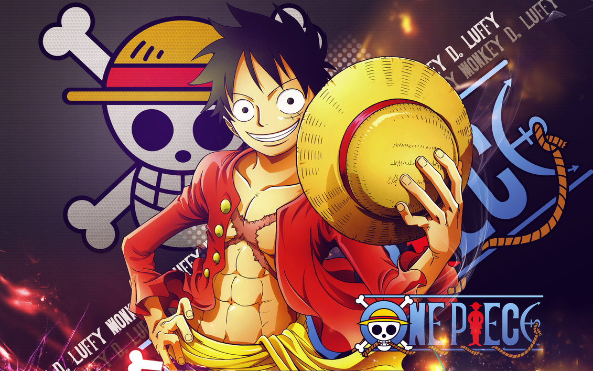

Monkey D. Luffy
Capitão
Usuário da Gomu Gomu no Mi, sonha em se tornar o Rei dos Piratas.
Capitão
Usuário da Gomu Gomu no Mi, sonha em se tornar o Rei dos Piratas.
Espadachim
Especialista em Santoryu (estilo de três espadas).

Navegadora
Especialista em navegação e manipulação do clima com o Clima-Tact.
Atirador
Mestre em estratégias e disparos de longa distância, também conhecido como "God Usopp".
Cozinheiro
Lutador habilidoso com chutes poderosos, também é um chef excepcional.
Médico
Rena que comeu a Hito Hito no Mi, pode se transformar em formas humanas e é um excelente médico.
Arqueóloga
Usuária da Hana Hana no Mi, especialista em Poneglyphs e história antiga.
Carpinteiro
Ciborgue talentoso, responsável pela construção do navio Thousand Sunny.
Músico
Esqueleto vivo que comeu a Yomi Yomi no Mi, habilidoso com espada e música.
Timoneiro
Homem-peixe mestre do karatê dos homens-peixe, com vasta experiência em navegação.
Guardiã de Wano | Filha de Kaido
Poderosa guerreira que herdou a vontade de Kozuki Oden, portadora da lendária Akuma no Mi "Inu Inu no Mi, Modelo: Okuchi no Makami".